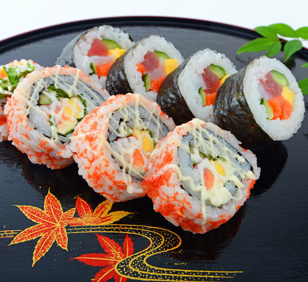

Maki Sushi Rolls Recipe

Description
Sushi rolls, or "makizushi" in Japanese, are what most non-Japanese people think of when they think of sushi. Makizushi is made by wrapping up fillings in rice and nori seaweed. This recipe shows you how to make a basic makizushi roll, which can then be filled with whatever fillings you desire. Master the technique and get creative.
Ingredients
- 100g sushi rice;
- 1 sheet nori seaweed;
- 2 tbsp sushi vinegar;
- soy sauce;
- wasabi;
- sushi ginger;
- roasted white sesame seeds (optional).
Possible Fillings
- tuna - sashimi grade, raw;
- salmon - sashimi grade, raw;
- avocado;
- cucumber;
- crab sticks;
- canned tuna mixed with mayo;
- prawns.
Steps
- To make sushi rice, Japanese white rice is mixed with a special sushi rice vinegar.
- Once you have your sushi rice prepared, you will need to begin by laying out a preparation area with your makisu rolling mat.
- Place a sheet or nori on the mat and cover two thirds of one side of your nori seaweed with your sushi rice approximately 1cm high.
- Add your ingredients in a line on top of the rice in the centre. You can choose any combination of ingredients that compliment each other well. We went for salmon, salad and mayonnaise for this one.
- Now for the fun bit. Using the wooden rolling mat, start rolling up the ingredients away from you, while keeping the roll tight. The moisture from the rice will help it stick together.
- You can then cut your roll into 6-8 pieces and serve with some soy sauce, wasabi, sushi ginger and cup of sencha green tea.
Return to Home Page